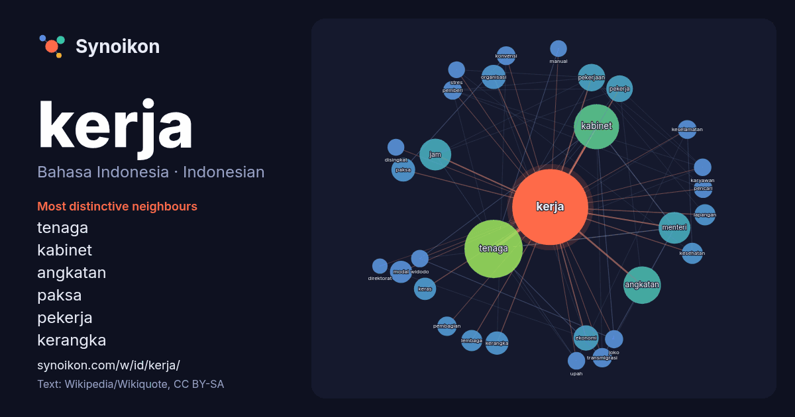

Bahasa Indonesia · Indonesian · popular word
kerja
“work” · The words found around it in 946 instances from Indonesian Wikipedia, Wikiquote.

Most distinctive neighbours
- tenaga 79×
- kabinet 66×
- angkatan 26×
- paksa 22×
- pekerja 20×
- kerangka 20×
- jam 19×
- menteri 19×
- modal 18×
- pekerjaan 17×
- transmigrasi 16×
- pemberi 15×
- pencari 15×
- pembagian 14×
- konvensi 14×
- joko 14×
- widodo 13×
- keselamatan 13×
- upah 13×
- stres 12×
× = how many times more often than in general Indonesian Wikipedia text.
Most frequent neighbours
- tenaga 145
- kabinet 87
- angkatan 60
- indonesia 50
- jam 43
- menteri 43
- orang 40
- pekerjaan 32
- pekerja 30
- ekonomi 27
- organisasi 25
- bahasa 24
- paksa 24
- kerangka 23
- presiden 23
- keras 21
- modal 21
- bidang 20
- memiliki 20
- wilayah 20
In context
- menjalin kerja sama di bidang lembaga keuangan bukan bank. Pada tahun 2025 Kementerian Keuangan (Jepang) dan Bank Indonesia menjalin kerja sama untuk Wikipedia snippets · Jepang
- Ketenagakerjaan Republik Indonesia atau Kemnaker (dahulu Kementerian Tenaga Kerja dan Transmigrasi, disingkat Kemnakertrans) adalah kementerian dalam Pemerintah Wikipedia snippets · Kementerian Ketenagakerjaan Republik Indonesia
- kelas tenaga kerja Eropa menuju gerakan massa yang akan berujung pada revolusi kelas tenaga kerja. Namun, untuk menghimpun kelas tenaga kerja dalam gerakan Wikipedia snippets · Karl Marx
- Kerja dapat merujuk kepada Kerja mekanik, jumlah energi yang diakibatkan oleh adanya gaya yang bekerja sepanjang lintasan tertentu Kerja (termodinamika) Wikipedia snippets · Kerja
- Kerja paksa (bahasa Inggris: forced labour) atau wajib kerja (bahasa Inggris: compulsory labour) adalah suatu hubungan kerja yang melibatkan pemaksaan Wikipedia snippets · Kerja paksa
- Tenaga kerja adalah setiap orang yang mampu melakukan pekerjaan guna menghasilkan barang dan atau produk serta jasa baik untuk memenuhi kebutuhan diri Wikipedia snippets · Tenaga kerja
- Oktober 2026, menggantikan Djamari Chaniago. Kemenko Polhukam merupakan mitra kerja strategis bagi Komisi I Dewan Perwakilan Rakyat Republik Indonesia (DPR Wikipedia snippets · Kementerian Koordinator Bidang Politik dan Keamanan Republik Indonesia
- Angkatan Kerja. Penduduk yang tergolong angkatan kerja berjumlah 5,1 juta jiwa. Sekitar 34% berstatus sebagai majikan, bekerja sendiri (20%), dan pekerja keluarga Wikipedia snippets · Sumatera Utara
More Indonesian words
- air
- anjing
- bahasa
- emas
- iklim
- jantung
- jembatan
- kebenaran
- kehidupan
- kekuasaan
- keluarga
- kematian
- kereta
- kesehatan
- kesenian
- kucing
- lingkungan
- makanan
- sains
- sejarah
- tuhan
- uang
Precomputed on 2026-10-09 with default settings (±5 words, medium corpus). The interactive map can refresh it with live data.